types of turtles
There are many types of turtles, with some common ones being the 'Wood Turtle', 'Common Snapping Turtle' and the 'Pig-nosed Turtle'.
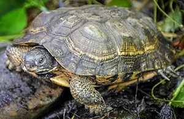
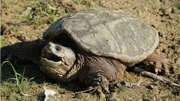
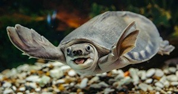
Turtles also share many similairites to Tortoises and Terrapins, mostly the big shells resting on their backs. A few examples of common tortoises 'Greek Tortoise', the 'Sulcata Tortoise' and the 'Russian Tortoise'.
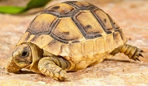
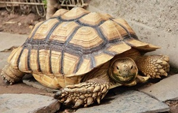
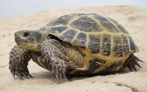
Some examples of popualr terrapins are the 'Red-Eared Slider' and the 'Diamondback Terrapin'.
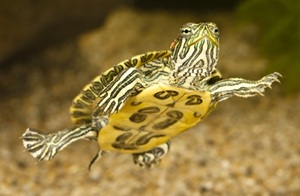
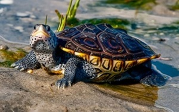
Info on turtles
Contrary to popular belief, Turtles are not the same as Tortoises and Terrapins. The most stark difference is in their habitat.
Turtles live in salty ocean waters, terrapins live in freshwater and tortoises only live on land.
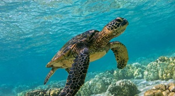
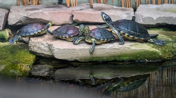
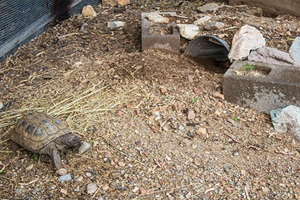
Living in the Ocean and their large slippers is what makes these turtles such excellent swimmers despite their large sizes. Some turtles can even swim up to 22 miles per hour!
Most turtles have a livespan of around 50 to 80 years, with their main source of food being plants, fish and other animal matter.
Fun Facts about turtles
Did you know that turtles are rumoured to have existed 200 million years ago when dinosaurs have existed. Making them belong to one of the oldest reptile groups!
Another cool thing is that the shells on the back of turtles are not for display! They are actually a part of their skeleton, which includes their spine and rib cage. So next time you see a turtle, try not to sit on their backs!
Turtles have another way of breathing underwater. Since they are unable to do so while swallowing their food, some species use their butts to breathe, allowing them to stay underwater for longer periods of time!
Not submitted
Turtle catcher Game
Tap start, Click Turtle to catch it!
.
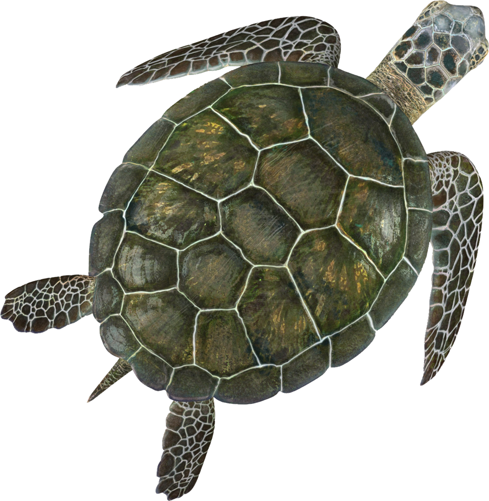